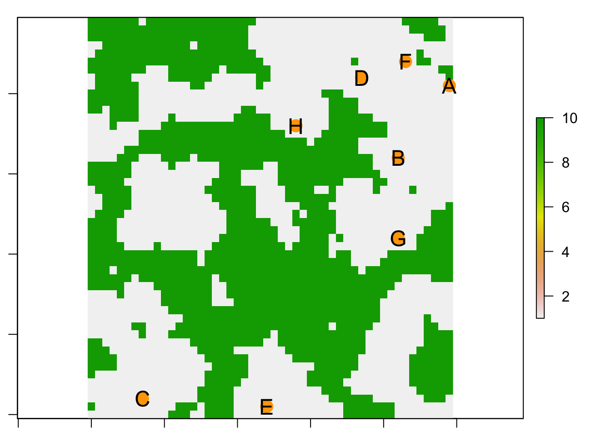

Worked Example
1. Overview of Worked Example
a. Goals
This worked example shows:
- Simulate a metapopulation on a resistance landscape
- Evaluate the power of a partial Mantel test
- Compare partial Mantel test to ‘Sunder’
- Run many simulations and synthesize results
b. Data set
We will simulate data using the ‘landgenreport’ function of the package ‘PopGenReport.’ See: www.popgenreport.org
c. Required R libraries
library(LandGenCourse)
library(PopGenReport ) #load the package
library(secr) #to create a random habitat
#library(gdistance)
#library(mmod)
library(raster)
#library(tibble)
#library(here)
#library(ggplot2)
#library(Sunder) # requires mnormtPackage ‘secr’ not automatically installed with ‘LandGenCourse’:
if(!require(secr)) install.packages("secr", repos='http://cran.us.r-project.org')
#library(secr)The following ‘setup chunk’ is used to set the root address of file paths to the root of the project folder.
knitr::opts_knit$set(root.dir = normalizePath("..")) 2. Initialize a landscape
a. Create a random landscape
We will use the ‘randomHabitat’ function from the ‘secr’ package to create a random habitat map and assign resistance values to habitat and non-habitat. There are many alternative ways to define your map, e.g. simply load a png file or any other file format using the ‘raster’ function from package ‘raster’ (?raster::raster, see the examples in there). If your map is categorical, assign resistance values to the different values in the raster as shown below for the missing values. If your map is already a resistance surface, skip this step.
Here we use the function ‘set.seed’ at the beginning of the simulation to make sure we get the same sequence of random numbers everytime we run this code. This makes the exact results reproducible even though we use a random process.
The function ‘make.grid’ here creates a landscape of nx=50 times xy=50 gridpoints spaced 1 unit (meter) apart. This is returned as a data frame ‘tempgrid’ with two columns that represent ‘x’ and ‘y’ grid coordinates.
nx=50
ny=50
set.seed(555) #(to make sure we have the same example running)
#tempmask<-secr::make.mask(nx=nx,ny=ny,spacing=1)
tempgrid<-secr::make.grid(nx=nx,ny=ny,spacing=1)In the function ‘randomHabitat,’ the argument ‘A’ specifies the expected proportion of habitat, and ‘p’ controls the level of fragmentation, i.e., degree of spatial aggregation (sorry this is naming may be a bit confusing, but that’s what it says in the help file: ?randomHabitat). The function simulates a map with these parameters and returns a data frame with only those points from ‘tempgrid’ that are habitat. It expects an input object of class ‘mask’ (an object type specific to the ‘secr’ package), hence we pass ‘as.mask(tempgrid).’
The function ‘raster’ of the ‘secr’ package (NOT from the ‘raster’ package) converts the data frame into a raster object. This object has one numeric variable that is 1 for habitat cells and missing for all other cells, we verify this with ‘table.’
Note: there may be a warning about non-missing arguments, you can ignore it.
#r <- raster(secr::randomHabitat(secr::as.mask(tempgrid), p = 0.5, A = 0.5))
#table(values(r), exclude="")NOTE: April 2021: This does not seem to work anymore. Workaround:
tmp <- secr::randomHabitat(secr::as.mask(tempgrid), p = 0.5, A = 0.5)
r <- as.data.frame(tempgrid)
r$resistance <- 10
r$resistance[as.numeric(row.names(tmp))] <- 1
r <- rasterFromXYZ(r)Now we set all missing values (i.e., non-habitat) to 10 and verify this again with ‘table.’
#values(r)[is.na(values(r))==T]<-10
table(values(r), exclude="")##
## 1 10
## 1308 1192par(mar=c(1,1,1,1))
plot(r)
We have thus created a numeric raster with a resistance surface where habitat cells (grey) have a resistance value of 1 and non-habitat cells (green) have a resistance value of 10.
b. Add populations to the landscape (using minimal distance)
We create a function that allows us to set up ‘n’ subpopulations in the habitat only (grid cells with value = 1). The subpopulations should be at least ‘minDist’ units apart, given any resistance surface ‘landscape.’ We also include an option to plot a raster map with the sampled locations of the populations.
We define a few variables within the function that help keep track. Note that we keep track of the cells by their raster cell number (which goes from 1:ncells). Here’s what the code does:
- Extract all cells that are habitat and store cell number in HabitatCells.
- Randomly sample one habitat cell and store its cell number in Selected.
- Store cell numbers of all remaining habitat cells in Remaining.
- Create a ‘while’ loop that continues until one of two things happens:
- Sample size ‘n’ is reached.
- There are no cells left in Remaining.
- Inside the loop:
- Randomly sample one habitat cell and store its number in Candidate.
- Remove the Candidate from Remaining (we don’t want to consider it twice).
- Calculate the Distance between Candidate and all populations in Selected. The function ‘xyFromCell’ gets the cell coordinates for each cell number, and the function ‘pointDistance’ calculates the distance between two sets of coordinates, here the coordinates for Candidate and for all cells in Selected. The argument ‘lonlat=FALSE’ tells ‘pointDistance’ that the coordinates are Euclidean.
- If the minimum of Distance is larger than ‘minDist,’ add a population. This is done by appending the value in Candidate to the vector Selected.
- Repeat.
- If requested, the raster map is plotted, cell coordinates for all populations (Selected) are extracted and added to the map as points with point symbol pch=16 (filled circle).
createpops <- function(n=10, minDist=5, landscape=r, habitat=1, plot=TRUE)
{
HabitatCells <- c(1:length(landscape))[values(landscape)==habitat]
Selected <- sample(HabitatCells, 1)
Remaining <- HabitatCells[!is.element(HabitatCells, Selected)]
while (length(Selected) < n & length(Remaining) > 0)
{
Candidate <- sample(Remaining, 1)
Remaining <- Remaining[!is.element(Remaining, Candidate)]
Distances <- raster::pointDistance(raster::xyFromCell(landscape, Candidate),
raster::xyFromCell(landscape, Selected),
lonlat=FALSE)
if(min(Distances) > minDist)
{
Selected <- append(Selected, Candidate)
}
}
if(plot==TRUE)
{
plot(landscape)
points(xyFromCell(landscape, Selected), pch=16)
}
return(Selected)
}Test the function above:
par(mar=c(1,1,1,1))
createpops(n=8, minDist = 3, landscape = r, plot = TRUE)
## [1] 1329 477 396 2498 441 692 602 1190c. Initialise a metapopulation
We use the function ‘init.popgensim’ from package ‘PopGenReport’ to initialise a metapopulation based on the grid cells that we just selected. To do this we need to initialise a number of parameters (the locations of the subpopulations, the number of individuals per subpopulation, the number of loci and alleles per loci. For a full list check ‘?init.popgensim’).
To store all the parameters we create a list called para where we store all of them
3. Define simulation parameters
a. Define your metapopulation
Define metapopulation:
para<- list()
#Define populations (dynamics)
para$n.pops=8
para$n.ind=100
para$sex.ratio <- 0.5
#age distribution....
para$n.cov <- 3
#number of covariates (before the loci in the data.frame, do not change this!!)Define population dynamics:
#reproduction
para$n.offspring = 2
#migration
para$mig.rate <- 0.1
#dispersal: exponential dispersal with maximal distance in map units
para$disp.max=50 #average dispersal of an individual in meters
para$disp.rate = 0.05 #proportion of dispersing individuals
#Define genetics
para$n.allels <- 10
para$n.loci <- 20
para$mut.rate <- 0.001Define cost distance method:
par(mar=c(1,1,1,1))
para$method <- "leastcost" #rSPDdistance, commute
para$NN <- 8 #number of neighbours for the cost distance method
# Initialize simulation of populations from scratch
landscape<- r #<-raster(system.file("external/rlogo.grd", package="raster"))
# Define x and y locations
para$cells <- createpops(n=para$n.pops, minDist = 3,
landscape = landscape, plot = FALSE)
para$locs <- raster::xyFromCell(landscape, para$cells)
#give the population some names
rownames(para$locs) <- LETTERS[1:para$n.pops]
# Create a matrix of pairwise cost distances...
cost.mat <- PopGenReport::costdistances(landscape, para$locs,
para$method, para$NN)
# ... and a matrix of pairwise Euclidean distances
eucl.mat <- as.matrix(dist(para$locs)) #needed for the analysis later
# Plot your landscape with the populations....
plot(landscape)
points(para$locs[,1], para$locs[,2], pch=16, cex=2, col="orange")
text(para$locs[,1],para$locs[,2], row.names(para$locs), cex=1.5)
# Check the parameter list
para## $n.pops
## [1] 8
##
## $n.ind
## [1] 100
##
## $sex.ratio
## [1] 0.5
##
## $n.cov
## [1] 3
##
## $n.offspring
## [1] 2
##
## $mig.rate
## [1] 0.1
##
## $disp.max
## [1] 50
##
## $disp.rate
## [1] 0.05
##
## $n.allels
## [1] 10
##
## $n.loci
## [1] 20
##
## $mut.rate
## [1] 0.001
##
## $method
## [1] "leastcost"
##
## $NN
## [1] 8
##
## $cells
## [1] 458 894 2359 389 2426 295 1394 680
##
## $locs
## x y
## A 7 40
## B 43 32
## C 8 2
## D 38 42
## E 25 1
## F 44 44
## G 43 22
## H 29 36b. Initialise your population on the landscape
Now finally we can initialise our population using the init function. We’ll call it ‘simpops.0’ to indicate that this is the initial generation.
simpops.0 <- PopGenReport::init.popgensim(para$n.pops, para$n.ind,
para$sex.ratio, para$n.loci,
para$n.allels, para$locs, para$n.cov ) You may want to check the simpops object, which is simply a list of our subpopulation and each individual is coded in a single run in one of the subpopulations.
names(simpops.0) #the names of the subpopulations## [1] "A" "B" "C" "D" "E" "F" "G" "H"head(simpops.0$A[,1:6]) ## a.list of the first 6 individuals and columns of population A## pop sex age locus1A locus1B locus2A
## 1 1 female NA 6 10 2
## 2 1 female NA 4 3 6
## 3 1 female NA 2 10 9
## 4 1 female NA 7 9 5
## 5 1 female NA 3 1 9
## 6 1 female NA 6 7 3We can also analyse our simpop object. (e.g. calculate the pairwise Fst value between all the populations).
To be able to do that we first need to convert it into a genind object (because many functions need this type of object as input).
gsp <- PopGenReport::pops2genind(simpops.0, locs =para$locs)
gsp #check the genind object## /// GENIND OBJECT /////////
##
## // 800 individuals; 20 loci; 200 alleles; size: 738.5 Kb
##
## // Basic content
## @tab: 800 x 200 matrix of allele counts
## @loc.n.all: number of alleles per locus (range: 10-10)
## @loc.fac: locus factor for the 200 columns of @tab
## @all.names: list of allele names for each locus
## @ploidy: ploidy of each individual (range: 2-2)
## @type: codom
## @call: df2genind(X = res, sep = "/", ind.names = rownames(res), pop = combine$pop)
##
## // Optional content
## @pop: population of each individual (group size range: 100-100)
## @other: a list containing: xysummary(gsp) #some summary statistics##
## // Number of individuals: 800
## // Group sizes: 100 100 100 100 100 100 100 100
## // Number of alleles per locus: 10 10 10 10 10 10 10 10 10 10 10 10 10 10 10 10 10 10 10 10
## // Number of alleles per group: 200 200 200 200 200 200 200 200
## // Percentage of missing data: 0 %
## // Observed heterozygosity: 0.9 0.89 0.89 0.89 0.9 0.89 0.9 0.92 0.9 0.9 0.91 0.9 0.9 0.88 0.9 0.9 0.91 0.9 0.89 0.88
## // Expected heterozygosity: 0.9 0.9 0.9 0.9 0.9 0.9 0.9 0.9 0.9 0.9 0.9 0.9 0.9 0.9 0.9 0.9 0.9 0.9 0.9 0.9round(mmod::pairwise_Gst_Nei(gsp),5)## A B C D E F G
## B -0.00012
## C 0.00006 0.00001
## D -0.00019 -0.00060 0.00022
## E 0.00010 -0.00030 -0.00014 -0.00058
## F 0.00016 -0.00031 0.00002 -0.00019 -0.00009
## G -0.00020 -0.00046 0.00022 -0.00023 -0.00027 -0.00013
## H -0.00045 -0.00013 -0.00009 -0.00008 -0.00007 -0.00033 -0.00020Is there an effect of the landscape on the population structure (there should not be after initialisation)?
The function ‘pairwise.fstb’ is around 150 times faster than mmod::pairwise_Gst_Nei, but slightly different.
gen.mat <- PopGenReport::pairwise.fstb(gsp)
round(gen.mat ,5)## A B C D E F G H
## A 0.00000 0.00239 0.00256 0.00231 0.00260 0.00266 0.00231 0.00205
## B 0.00239 0.00000 0.00252 0.00191 0.00220 0.00220 0.00205 0.00238
## C 0.00256 0.00252 0.00000 0.00273 0.00237 0.00253 0.00273 0.00241
## D 0.00231 0.00191 0.00273 0.00000 0.00193 0.00232 0.00228 0.00243
## E 0.00260 0.00220 0.00237 0.00193 0.00000 0.00241 0.00224 0.00244
## F 0.00266 0.00220 0.00253 0.00232 0.00241 0.00000 0.00237 0.00218
## G 0.00231 0.00205 0.00273 0.00228 0.00224 0.00237 0.00000 0.00230
## H 0.00205 0.00238 0.00241 0.00243 0.00244 0.00218 0.00230 0.00000Now we perform a two partial Mantel tests, one for the effect of the cost distance partialling out the effect of Euclidean distance (Gen ~cost | Euclidean), and one the other way round. The method ‘wassermann’ from the ‘PopGenReport’ package returns a data frame with two rows (one for each test) and three columns (model, r = Mantel r statistic, p = p-value), following this method:
- Wassermann, T.N., Cushman, S. A., Schwartz, M. K. and Wallin, D. O. (2010). Spatial scaling and multi-model inference in landscape genetics: Martes americana in northern Idaho. Landscape Ecology, 25(10), 1601-1612.
PopGenReport::wassermann(eucl.mat = eucl.mat, cost.mats = list(cost=cost.mat),
gen.mat = gen.mat, plot=F)$mantel.tab## model r p
## 2 Gen ~Euclidean | cost 0.1578 0.248
## 1 Gen ~cost | Euclidean 0.151 0.268Check the pairwise Fst values, why are they so low? Hints:
- How were genotypes assigned to the initial generation
- How many generations have we simulated thus far?
- At this point in the simulation, do you expect to see an effet of IBD, IBR, or neither?
4. Run simulations and analyze results
a. Run your simulation over multiple time steps (years)
Now we can run our simulation by simply passing our object ‘simpops’ to the function ‘run.popgensim,’ with some additional parameters that are needed for the simulation. We specify the number of generations the simulation should run with the steps parameter. (Check ?run.popgensim for a description of all parameters).
Important to understand is the idea of the cost.mat (which is the cost matrix that is used for the distance between subpopulation). The n.alleles, n.ind cannot be different from the initialisation.
simpops <- PopGenReport::run.popgensim(simpops.0, steps=3, cost.mat,
n.offspring=para$n.offspring, n.ind=para$n.ind,
para$mig.rate, para$disp.max, para$disp.rate,
para$n.allels, para$mut.rate,
n.cov=para$n.cov, rec="none")In essence we were running a metapopulation with 100 individuals per subpopulation on our resistance landscape for 3 generations. The question is now was that enough time to create an effect on population structure?
b. Analyse your simulated population with a partial Mantel test
Let’s check the pairwise Fst values and then do a landscape genetic analysis using partial Mantel tests.
Convert to genind to calculate pairwise Fst.
gsp <- PopGenReport::pops2genind(simpops, para$locs, para$n.cov)Calculate your genetic distance matrix e.g. fst or D.
gen.mat <- PopGenReport::pairwise.fstb(gsp)
round(gen.mat ,3)## A B C D E F G H
## A 0.000 0.008 0.008 0.006 0.008 0.006 0.007 0.008
## B 0.008 0.000 0.008 0.007 0.009 0.007 0.008 0.008
## C 0.008 0.008 0.000 0.008 0.009 0.007 0.008 0.007
## D 0.006 0.007 0.008 0.000 0.008 0.006 0.007 0.007
## E 0.008 0.009 0.009 0.008 0.000 0.009 0.009 0.010
## F 0.006 0.007 0.007 0.006 0.009 0.000 0.007 0.006
## G 0.007 0.008 0.008 0.007 0.009 0.007 0.000 0.007
## H 0.008 0.008 0.007 0.007 0.010 0.006 0.007 0.000Partial Mantel test:
PopGenReport::wassermann(eucl.mat = eucl.mat, cost.mats = list(cost=cost.mat),
gen.mat = gen.mat, plot=F)$mantel.tab## model r p
## 1 Gen ~cost | Euclidean 0.5525 0.025
## 2 Gen ~Euclidean | cost -0.3513 0.911We can extract a specific value from this result, e.g., the p-value of the test “Gen ~cost | Euclidean.” (Note that every time we call the function ‘wassermann,’ a permutation test is performed (default: ‘nperm = 999’), and the p-value may thus vary somewhat).
res <- PopGenReport::wassermann(eucl.mat = eucl.mat,
cost.mats = list(cost=cost.mat),
gen.mat = gen.mat, plot=F)$mantel.tab
res[res$model == "Gen ~cost | Euclidean", "p"]## [1] "0.035"c. Optional: Analyze your simulated populations using ‘Sunder’
See: http://www.nbi.dk/~botta/Sunder.html#overview
Sunder is an alternative (faster) implementation of BEDASSLE, which uses molecular covariance analysis as an alternative to partial Mantel test. All we want from this method for now is the best-model (note that there is no alternative ‘none’):
- G: Geographic distance model (IBD)
- G: Ecological distance model (IBR)
- G+E: Both
To perform the Sunder analysis, we need to reformat the allele frequencies into a three-dimensional array (site x locus x allele). Here we define a function that takes as argument a ‘genind’ object and reformats it as needed.
getArray <- function(gen)
{
tmp <- Reduce(rbind,lapply(split(data.frame(gen@tab), gen@pop),
colSums, na.rm=TRUE))
row.names(tmp) <- levels(gen@pop)
tmp <- split(data.frame(t(tmp)), gen@loc.fac)
Array <- array(0, dim=c(ncol(tmp[[1]]), length(tmp), nrow(tmp[[1]])))
for(i in 1:length(tmp))
{
Array[,i,] <- t(tmp[[i]])
}
return(Array)
}Apply the function to the genind object ‘gsp’ with the simulated genotypes:
Array <- getArray(gsp)
dim(Array)## [1] 8 20 10Run the analysis (parameter settings: http://www.nbi.dk/~botta/Sunder.html#overview)
D.G <- as.matrix(dist(para$locs))
D.E <- cost.mat
nit <- 10^2 ### j.st for the example, should be much larger, e.g. 50000
output <- Sunder::MCMCCV(Array,D.G,D.E,
nit=nit,thinning=max(nit/10^3,1),
theta.max=c(10,10*max(D.G),10*max(D.E),1,0.9),
theta.init=c(1,2,1,1,0.01),
run=c(1,1,1), ud=c(0,1,1,0,0),
n.validation.set=dim(Array)[1]*dim(Array)[2]/10,
print.pct=FALSE)## Computations for model 'geog+envi'
## Computations for model 'geog'
## Computations for model 'envi'Quick answer: the winner (best supporte model) is …
names(which.max(output$mod.lik))## [1] "G+E"What did we just do? We extracted the log-likelihood values for the three models ‘G,’ ‘E’ and ‘G+E,’ determined which value was the highest, and extracted the name of the winning model. Let’s verify this by printing the log-likelihood values. The best model has the highest (= least negative) log-likelihood.
print(output$mod.lik)## G+E G E
## -8983.219 -8991.129 -9009.385Let’s combine all of this into our own function to convert the genind object, calculate Sunder and extract the name of the best fitting model
getSunder <- function(gen=gsp, locs=para$locs, cost=cost.mat, nit=10^2)
{
Array <- getArray(gen)
D.G <- as.matrix(dist(locs))
D.E <- cost
output <- Sunder::MCMCCV(Array,D.G,D.E,
nit,thinning=max(nit/10^3,1),
theta.max=c(10,10*max(D.G),10*max(D.E),1,0.9),
theta.init=c(1,2,1,1,0.01),
run=c(1,1,1), ud=c(0,1,1,0,0),
n.validation.set=dim(Array)[1]*dim(Array)[2]/10,
print.pct=FALSE)
return(names(which.max(output$mod.lik)))
}Let’s test it:
getSunder()## Computations for model 'geog+envi'
## Computations for model 'geog'
## Computations for model 'envi'## [1] "G+E"5. Run simulator using a previously defined parameter set
Once the simulator works and you are certain that you understand how the simulator needs to be set up for a single run, in almost all studies on simulations you want to be able to re-run the simulator in an automatized way. There are several reasons why you want to do that.
- You want to perform a sensitivity analysis on a single parameter, which means, try to find how much does the output (e.g. pairwise Fst between subpopulations) change when you vary an input parameter (e.g. number of loci).
- You want to explore the “complete” parameter space, which means, instead of changing values of a single input parameter you want to change all parameters (within certain levels) and run their combinations.
- Another reason is that you want to create a simulated test data set that forms the backbone of your future studies.
So we would like to do the following.
- Specify and record all the parameter combinations that you would like to run.
- Specify and record all the parameter combinations that you would like to run.
- Run the simulator with every combination
- [Optional] save your complete simulation run (recommended, but sometimes prohibitive due to needed resources) or only a calculated summary.
- Read in your simulations, analyse them and synthesize your results via additional statistics, tests, plots.
- Publish an enormously important paper….
Admittedly there are several different approaches and as it seems every modeller has a slightly different way to achieve these steps. One approach is to create a parameter file that records all the parameter setting for each run. Another approach is to create so called scripts for every single run. The advantage here is that scripts can be easily distributed across different cores and machines and therefore this approach is easy to parallelise your runs, which sometimes is necessary. Finally the approach I will present here (also because of practical reasons) is to create an R data.frame that stores all the parameter settings and we run all combinations in serial mode instead of in parallel.
Okay before we start we need to think about what kind of parameters we want to explore. I would like to do the following runs:
- Run our simulations as above (same parameter settings) for varying time steps (say between 5 to 45 years in steps of 20). We’ll keep the number of levels and the maximum number of steps low in this example to limit computation time. Feel free to expand!
- As output I would still like to record the Fst value, but also the full genetic data set and the parameters used to run the simulation.
- In addition I want to repeat each run 5 times (most often you would do more repetitions) to check how much general variation there is between runs with exactly the same parameter combination.
a. Specify and record the parameter combinations
Let’s define the varying numbers of time steps we would like to run the simulations. Here we define a sequence from 5 to 45 in steps of 20, which results in a series c(5, 25, 45). We will interpret these values as numeric, therefore we don’t convert to ‘factor.’
timesteps <- seq(from=5 , to=45, by=20)We also specify the number of repeats (replicate simulation runs). We want to do five replicate simulation runs per for each level of ‘time,’ and we will label replicates from 1 through 5. These are essentially labels and we’ll save them as a factor:
repeats <- factor(1:5)Now we would like to have a data frame that stores all possible combinations for those two parameters. As simple way to do that in R, is to use the ‘expand.grid’ function.
para.space <- expand.grid(rep=repeats, time=timesteps)
tibble::as_tibble(para.space)## # A tibble: 15 x 2
## rep time
## <fct> <dbl>
## 1 1 5
## 2 2 5
## 3 3 5
## 4 4 5
## 5 5 5
## 6 1 25
## 7 2 25
## 8 3 25
## 9 4 25
## 10 5 25
## 11 1 45
## 12 2 45
## 13 3 45
## 14 4 45
## 15 5 45As you can see this results in 15 combinations (3 time steps x 5 repeats). The beauty of this approach is that it is very flexible and adaptable to runs over other parameter combinations, as you can provide more than two parameter variables to ‘expand.grid.’
b. Run the simulator over every parameter combination.
Remember our parameters are all defined in the ‘para’ object (a list) and we want to keep them constant, except for running the simulation for different number of years. This means that we only need to modify the argument ‘steps.’
Summarizing the code from above, a single run of our simulator runs via:
#initialize
simpops.0 <- PopGenReport::init.popgensim(para$n.pops, para$n.ind,
para$sex.ratio, para$n.loci,
para$n.allels, para$locs, para$n.cov )
#run for 20 generations
simpops <- PopGenReport::run.popgensim(simpops.0, steps=20, cost.mat,
n.offspring=para$n.offspring, n.ind=para$n.ind,
para$mig.rate, para$disp.max, para$disp.rate,
para$n.allels, para$mut.rate,
n.cov=para$n.cov, rec="none")We adapt this code as follows:
- Create a ‘for’ loop that cycles through every row ‘i’ in ‘para.space’
- For each value of ‘i’:
- Initialize population ‘simpops.0.’
- Run the simulation with argument ‘steps = para.space$time[i].’
We are not running the code just yet, hence it is commented-out with ‘#.’
#for (i in 1:nrow(para.space))
#{
# #initialize
# simpops.0 <- PopGenReport::init.popgensim(para$n.pops, para$n.ind,
# para$sex.ratio, para$n.loci, para$n.allels,
# para$locs, para$n.cov )
#
# #run for para.space$time[i] generations
# simpops <- PopGenReport::run.popgensim(simpops.0,
# steps=para.space$time[i], cost.mat,
# n.offspring=para$n.offspring, n.ind=para$n.ind,
# para$mig.rate, para$disp.max, para$disp.rate,
# para$n.allels, para$mut.rate,
# n.cov=para$n.cov, rec="none")
#}Have a close look at the change.
Question: what changes between replicate runs, and what not? Consider the following aspects:
- Landscape
- Population locations
- Pairwise distances (cost, Euclidean)
- Initial populations with initial genotypes
- Migration and gene flow
c. Save your complete simulation run (input and output)
Simply running the simulation 15 times (number of rows in ‘para.space’) by itself is not useful yet. We need to store the simulation runs somehow, so we can collect them afterwards to calculate summary statistics and analyse the runs.
How do we store the repeats seperately in a file? One approach would be to have a different file name for every repeat, but in my view, a cleaner approach is to store all simulation outputs and also store the complete parameter and input information in a file, so everything that is need is in one place. A nice way to do that in R is to create a ‘list’ object that stores all in a single object, which can be saved (and is automatically packed) and re-loaded as an R object. This is convenient as long as I only want to analyze the results in R, not export to other software.
Here we do the following:
- Create a timer with the function ‘proc.time’ so that we know roughly how long the computations take.
- For each line ‘i’ in ‘para.space’:
- Initialize simpops.0.
- Run the simulation with ‘steps=para.space$time[i].’
- Convert the resulting ‘simpop’ to a genind object ‘gi’ (smaller to store)
- Create a list ‘sim’ of all simulation parameters we want to store.
- Save the object ‘sim’ as an ‘RData’ file with a unique file name in the folder ‘output/simout’ in the project directory.
- Print a message after each run to report progress and computation time.
- Flush the output console to make sure it is current (only relevant for console-based versions of R).
The list ‘sim’ will contain the following elements. Note: the name is repeated (e.g., ‘gi = gi’) to create a named list, i.e., to specify the names of the list elements.
- para.space: the row ‘para.space[i]’ with settings of the simulation run.
- para: a copy of the list ‘para’ that contains the other parameters that are the same for all simulation runs.
- landscape: the landscape.
- cost.mat: the matrix of pairwise cost distances
- gi: the genind object that contains the genotypes at the end of the simulation.
First we make sure the folder simout exists within the output folder in the R project:
if(!dir.exists(paste0(here::here(),"/output")))
dir.create(paste0(here::here(),"/output"))
if(!dir.exists(paste0(here::here(),"/output/simout")))
dir.create(paste0(here::here(),"/output/simout"))## c.eate a timer (just to know how long it will take roughly)
timer0 <- round(proc.time()[3],2)
for (i in 1:nrow(para.space))
{
## i.itialize
simpops.0 <- PopGenReport::init.popgensim(para$n.pops, para$n.ind,
para$sex.ratio, para$n.loci, para$n.allels,
para$locs, para$n.cov )
# run for para.space$time[i] generations
simpops <- PopGenReport::run.popgensim(simpops.0,
steps=para.space$time[i], cost.mat,
n.offspring=para$n.offspring, n.ind=para$n.ind,
para$mig.rate, para$disp.max, para$disp.rate,
para$n.allels, para$mut.rate,
n.cov=para$n.cov, rec="none")
## c.nvert to genind object (smaller)
gi <- PopGenReport::pops2genind(simpops)
## c.eate a list of all I want to collect
sim <- list(para.space=para.space[i,], para=para,
landscape=landscape, cost.mat=cost.mat, gi=gi)
# save everything in an output folder (with a consecutive number, with three leading zeros, so the file sorting is nicer)
save(sim, file = paste0(here::here(),"/output/simout/sim_time5-45_rep5_",
sprintf("%03i",i) ,".RData"))
cat(paste0("Finished run: ", i," out of ",nrow(para.space),
". So far, it took: ", round(proc.time()[3]-timer0,2)," sec.\n"))
flush.console()
}## Finished run: 1 out of 15. So far, it took: 0.49 sec.
## Finished run: 2 out of 15. So far, it took: 0.94 sec.
## Finished run: 3 out of 15. So far, it took: 1.46 sec.
## Finished run: 4 out of 15. So far, it took: 1.89 sec.
## Finished run: 5 out of 15. So far, it took: 2.36 sec.
## Finished run: 6 out of 15. So far, it took: 4.42 sec.
## Finished run: 7 out of 15. So far, it took: 6.42 sec.
## Finished run: 8 out of 15. So far, it took: 8.53 sec.
## Finished run: 9 out of 15. So far, it took: 10.5 sec.
## Finished run: 10 out of 15. So far, it took: 12.5 sec.
## Finished run: 11 out of 15. So far, it took: 16.69 sec.
## Finished run: 12 out of 15. So far, it took: 22.13 sec.
## Finished run: 13 out of 15. So far, it took: 29.05 sec.
## Finished run: 14 out of 15. So far, it took: 35.8 sec.
## Finished run: 15 out of 15. So far, it took: 39.02 sec.d. Analyze and synthesize results
If you check your output folder (simout) you should see 15 files.
Note: File paths can be different when you execute a chunk in an R notebook compared to when you copy-paste the same line into the console! We avoid this problem by using the function ‘here’ from package ‘here.’
head(dir(paste0(here::here(), "/output/simout")))## [1] "sim_time5-45_rep5_001.RData" "sim_time5-45_rep5_002.RData"
## [3] "sim_time5-45_rep5_003.RData" "sim_time5-45_rep5_004.RData"
## [5] "sim_time5-45_rep5_005.RData" "sim_time5-45_rep5_006.RData"Now we are at step D where we need to read in all our files one by one, calculate some summary statistics and plot our results.
Again, this could be easy, but be aware if you have thousands of files it could take quite some time and memory. The most convenient way is to load everyting and store it in a list, so we can access all of our simulations from memory. I will show how to do this in the example below, but be aware in larger simulations (think millions of runs, or large sample sizes) this is not possible and we would load a single simulation, calculate a statistic, store only the result in a table and free the memory for the next simulation run.
Let’s load our simulation runs. There is one caveat: when we load the object ‘sim’ from the ‘.RData file,’ we can’t assign it a new object name. I.e., we can’t use ‘newName <- load(“sim.Rdata”). Instead, we can only type ’load(“sim.Rdata”)’ and it will create or overwrite the object ‘sim.’ Also, R takes the name from the object that was saved, not from the file name. Hence, once we load the object, any existing object of the same name will be overwritten. So if we want to keep, it we need to rename it before using ‘load.’
Here we do the following:
- Create an empty table with three columns ‘rep,’ ‘time,’ ‘fst’ and other columns to collect summary results for the 15 simulation runs.
- Create a vector that contains all filenames. The function ‘list.files’ does just that. We specify with path=“./simout”’ that the files in folder ‘simout’ should be listed, and with ’pattern=“sim” we specify that we want all file names that contain the expression “sim” (we could also have used “time,” for example - any component of the file name that is shared by all the files we are interested in but no other files that might be in the same folder).
- Loop through the files. For each filename ‘i’:
- Load the file, which will create or overwrite the object ‘sim.’ We need to supply not only the file name but the path, hence ‘paste0(“./simout/,”filenames[i])’ (see Week 8 video for more on file paths).
- Extract simulation parameters: Copy the ith row from ‘para.space’ (repeat number, timesteps) into the first two columns of the ith row of ‘res.’
- Extract the genind object ‘gi’ with the final genotypes.
- Calculate the mean of pairwise fst values and store in the third column of the ith row of ‘res.’
- Perform partial Mantel tests with function ‘wasserman’ and store the Mantel r statistics and the p-values in the corresponding columns. Note that this is somewhat tricky because the function ‘wasserman’ ranks the models and the better fitting model is listed in the first row, so that the order of the models can vary between runs. Therefore we extract the values based on model name.
- Perform ‘Sunder’ covariance analysis and extract which model is best supported (‘G,’ ‘E’ or ‘GE’).
res <- data.frame(rep=NA, time=NA, fst=NA, r.Eucl=NA, p.Eucl=NA,
r.cost=NA, p.cost=NA, Sunder=NA)
#load all files in the folder
filenames <- list.files(path= paste0(here::here(), "/output/simout"), pattern="sim")
for (i in 1:length(filenames))
{
#creates a sim object
load(paste0(here::here(), "/output/simout/",filenames[i]))
#now let us take what we need from the simulation
res[i,1:2] <- sim$para.space
#calculate a summary statistic: mean of pairwise fst values
## h.re we only take the lower triangle of the matrix to avoid the diagonal values,
# which are zero by definition (comparing each population to itself)
gen.mat <- PopGenReport::pairwise.fstb(sim$gi)
res [i,3] <- mean(gen.mat[lower.tri(gen.mat)])
#partial Mantel tests
wass <- PopGenReport::wassermann(eucl.mat = dist(sim$para$locs),
cost.mats = list(cost=sim$cost.mat),
gen.mat = gen.mat, plot=F)$mantel.tab
res[i,4:5] <- wass[wass$model == "Gen ~Euclidean | cost", 2:3]
res[i,6:7] <- wass[wass$model == "Gen ~cost | Euclidean", 2:3]
#Sunder
res[i,8] <- getSunder(gen=sim$gi, locs=sim$para$locs,
cost=sim$cost.mat, nit=10^2) #if you have time, set nit=10^3
}## Computations for model 'geog+envi'
## Computations for model 'geog'
## Computations for model 'envi'
##
## Computations for model 'geog+envi'
## Computations for model 'geog'
## Computations for model 'envi'
##
## Computations for model 'geog+envi'
## Computations for model 'geog'
## Computations for model 'envi'
##
## Computations for model 'geog+envi'
## Computations for model 'geog'
## Computations for model 'envi'
##
## Computations for model 'geog+envi'
## Computations for model 'geog'
## Computations for model 'envi'
##
## Computations for model 'geog+envi'
## Computations for model 'geog'
## Computations for model 'envi'
##
## Computations for model 'geog+envi'
## Computations for model 'geog'
## Computations for model 'envi'
##
## Computations for model 'geog+envi'
## Computations for model 'geog'
## Computations for model 'envi'
##
## Computations for model 'geog+envi'
## Computations for model 'geog'
## Computations for model 'envi'
##
## Computations for model 'geog+envi'
## Computations for model 'geog'
## Computations for model 'envi'
##
## Computations for model 'geog+envi'
## Computations for model 'geog'
## Computations for model 'envi'
##
## Computations for model 'geog+envi'
## Computations for model 'geog'
## Computations for model 'envi'
##
## Computations for model 'geog+envi'
## Computations for model 'geog'
## Computations for model 'envi'
##
## Computations for model 'geog+envi'
## Computations for model 'geog'
## Computations for model 'envi'
##
## Computations for model 'geog+envi'
## Computations for model 'geog'
## Computations for model 'envi'Look at the ‘res’ data frame and check the results.
head(res)## rep time fst r.Eucl p.Eucl r.cost p.cost Sunder
## 1 1 5 0.009340057 0.0455 0.494 0.1492 0.305 G+E
## 2 2 5 0.009210392 -0.1807 0.723 0.4638 0.045 E
## 3 3 5 0.008996691 0.2389 0.198 -0.0054 0.508 G
## 4 4 5 0.010043283 -0.0772 0.624 0.1089 0.356 E
## 5 5 5 0.009755578 -0.1557 0.739 0.21 0.25 G
## 6 1 25 0.022190031 0.0424 0.425 0.5067 0.059 G+EThe next step would be to visualise the results (e.g. plot runs over times and color by rep). A quick way to do that is to use the function ‘ggplot’ from the ‘ggplot2’ package. Here we add a jitter to keep points from overlapping too much.
ggplot2::ggplot(res, ggplot2::aes(x=time, y=fst)) +
ggplot2::geom_point(position = ggplot2::position_jitter(w = 0.5))
Now it is again time for you to experiment. For example, why not set up a simulation that varies the number of loci. Or as you may have seen even after 100 generation there was no sign that the mean pairwise Fst value is levelling off. So how long do you have to run a simulation in terms of time to see this (be aware that simulation runs take longer if you increase the number of timesteps)?
Questions:
- How would you set up a simulation experiment to compare type I error rates between partial Mantel test and Sunder?
- How about statistical power?
Have fun and please give us feed back what you think about this Worked Example. Bernd Gruber, Erin Landguth, Helene Wagner.